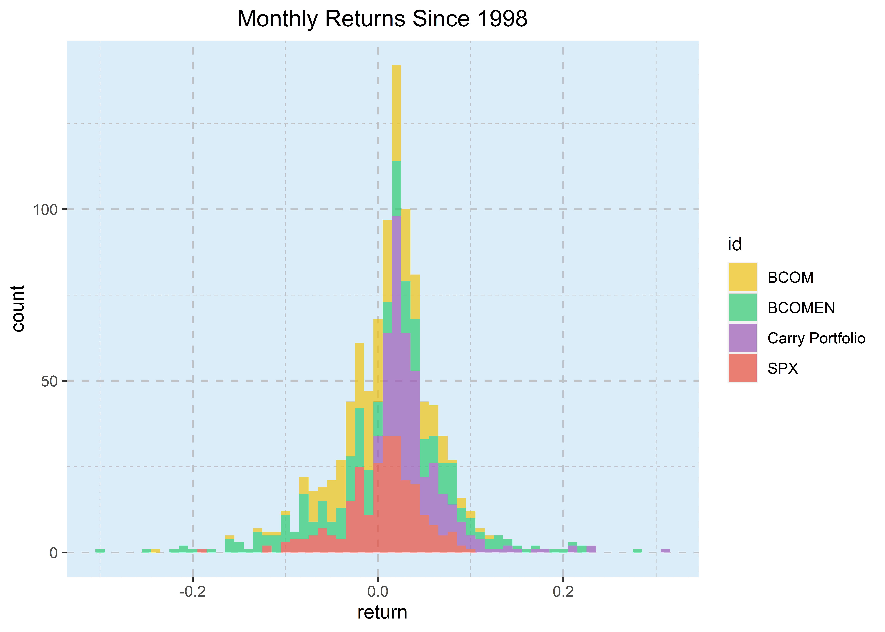
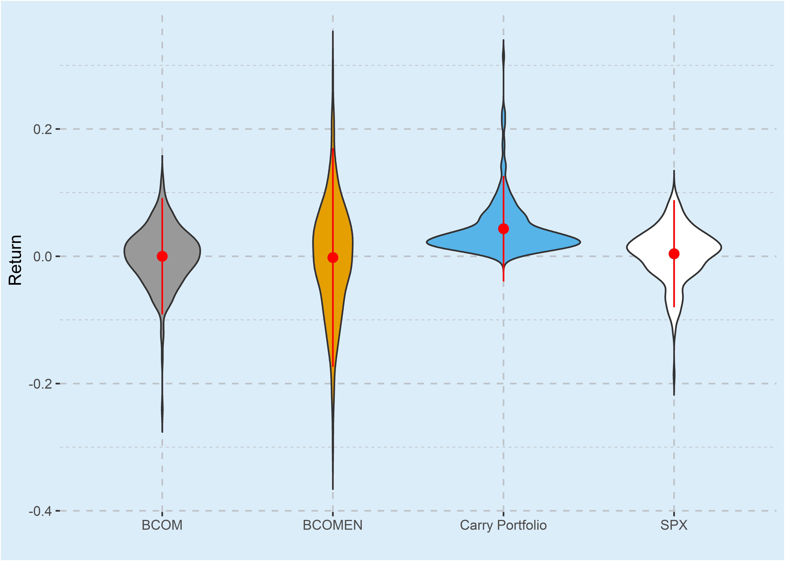

Empirical Analysis
Bradley Eltringham 1604611 and Ariella Klitzner 1374057
8/24/2020
Introduction
Here we are going to cover the basics using R to perform statistical analysis for a research paper. The code reported here is what we used to obtain the results in our final research report.
Our research is focused on testing carry on commodity futures contracts. Carry is mostly associated with currency carry trades, where one borrows in the low interest rate currency to lend in the high interest currency. However, despite this association, carry trades can be done with any asset. Carry is defined simply as the return to holding any asset.
Commodities typically have high negative carries due to high storage costs and opportunity costs. Our research deals with commodity carry trades, focusing only on energy futures contracts. TO understand this concept, one needs to understand the commodities market. Commodities are mostly traded through futures, hence the spot market is largely illiquid. However, futures prices are not spot prices today, they are spot price on maturity. Conversely, the actual spot price on maturity may differ from the futures price. Therefore, in commodities market, carry is the difference between the actual spot price and the futures price. Since futures contracts have agreed prices for the commodity, the carry is known only if the spot price on maturity is equal to the contract price. Otherwise, supply and demand changes the spot price, which makes the carry uncertain. Hence, a commodity carry trade is not an arbitrage trade.
This webpage will introduce you, the reader, to the code required to create a commodities carry trade portfolio. The code here follows the methodology described in our attached Research Overview (RO). This webpage is organised into 4 main sections namely; Packages, Data Import, Data Transformations, and Portfolio Results.
Packages
The code chunk below shows the list of packages that we used in our code. The packages contain pre-written code that stream lines data analysis and visualisation for us.
We have organised this code to install packages that is not on the users system. This makes our work more reproducible.
pkgs <- c("tseries", "rmarkdown", "tidyverse", "ggthemes", "dplyr", "data.table", "lubridate", "fBasics", "rio", "highcharter", "xts", "Hmisc", "broom")
sapply(pkgs, function(x) if (!require(x, character.only =
TRUE)) {
install.packages(x, repos = "https://cran.mirror.ac.za/")
require(x, character.only = TRUE)
})Importing Data
The raw data was retrieved from Bloomberg, as described in section of the attached RO. The downloaded data has file extension “.xlsx”. The “.csv” file format is preferred, so the files need to be converted to “.csv”. With 9 excel files, this process is tideous to do by hand. Fortunately, this is quite easy to do using the rio package.
xls <- dir(pattern = "xlsx") # list files
created <- mapply(convert, xls, gsub("xlsx", "csv", xls)) # convert all the files
unlink(xls) # delete xlsx filesThe code is fairly self explanatory; list files with a “xlsx” file extension, use mapply to loop over the list of files to convert from xlsx to csv, and then delete the xlsx files. That is the code that was used to convert the files, which neatly shows that R can be used for general automation tasks and not just for statistical analysis.
filenames <- grep("(?<!index)\\.csv", list.files("data/", full.names = TRUE), perl=T, value=T)
data_list <- lapply(filenames, read.csv, stringsAsFactors=FALSE, na.strings = "N/A", skip = 4)
names(data_list) <- substr(gsub( " .*$", "", filenames), 6, nchar(gsub( " .*$", "", filenames)))Once we have our csv files, we can import into R. The most efficient way to import multiple csv files, is to load them into a list. To this, one first needs a list of file names. We can get a list of file names using list.files() and setting the pattern argument to "*.csv" to get a list of csv files in a directory.
In our case, we have data for commodity contracts and data for commodity indices, which we’d rather keep separate. Therefore, we pass the list returned by list.files() to grep() to exclude files that have the string “index.csv” at the end. The argument perl = TRUE is necessary in order to use lookaround assertions.
we then use lapply to loop over the file names to import them into our R session. We use the read.csv function, passing additional arguments to it. We set skip = 4 due the format of our data. Downloaded from Bloomberg, the data contains non-crucial rows in the first four observations, i.e. rows that do not relate to the observations at all and are purely descriptive.
Once the list has been created, we give name each element in the list according to the file name of the original data. We only use the first word that appears before the first white space character
filenames <-list.files("data/", pattern = "index", full.names = TRUE)
index_list <- lapply(filenames, read.csv, stringsAsFactors=FALSE, na.strings = "N/A", skip = 4)
names(index_list) <- c("BCOM", "energy", "SPX")The code chunk above repeats the process for the index files.
Before we proceed with data transformations, a quick glance at our data types. Thanks to the greatness of methods in object oriented programming, the summary() function “knows” to print a summary of the structure of a list in this context.
summary(data_list)| Length | Class | Mode | |
|---|---|---|---|
| gasoil | 5 | data.frame | list |
| gasoline | 5 | data.frame | list |
| heating | 5 | data.frame | list |
| ice | 5 | data.frame | list |
| natural | 5 | data.frame | list |
| WTI | 5 | data.frame | list |
As can be seen from the output above, the list contains 6 data frames, which themselves have 5 columns.
Data Transformations
This is the most crucial part of any analytical work, changing data into format ready for analysis. For us, it is even more true, given that the bulk of the code is devoted to this.
contracts <- do.call(rbind, Map(cbind, data_list, id = c("QS", "XB", "HO", "CO", "NG", "CL")))
indices <- do.call(rbind, Map(cbind, index_list, id = names(index_list)))Since the goal is to eventually combine the dataframes in the lists into a contracts dataframe and indices dataframe respectively, it is important to have an id column that will identify what contract or index the observations correspond to.
With each data frame given an id column, we can now combine the dataframes in the lists into a one dataframe for each list. This is done using do.call(rbind, list), although instead of passing the list, we use Map to add an id column to each data frame in the list. The Map function returns a list, which we use to perform the rbind. The rbind simply combines the data frames by row, which only works if the data frames have the same number of columns, which is one reason we have separate lists.
head(contracts)conTable <- knitr::kable(contracts[1:5,], format = "html")
conTable <- sub("<table>", "<table class = 'table-extra'>", conTable)
conTable
remove(conTable)The output above shows that the date column is not formatted as dates. We can change this with as.Date(). Since the dates column has numeric data, we need to supply an origin. This will represent the number of days since the origin. The programming standard is “1970-01-01” or “1900-01-01”, but excel is different in this regard this function, the origin argument is required. The origin in excel is “1899-12-30”. This is because of an old bug that thought 1900 was a leap year. The reason for this difference is given here
contracts <- contracts %>%
select(-contains("CONTRACT")) %>%
mutate(Dates = as.Date(Dates, origin = "1899-12-30"))
head(contracts, 4)| Dates | Last.Price | Last.Price.1 | id |
|---|---|---|---|
| 1998-11-30 | 94.50 | 98.50 | QS |
| 1998-12-31 | 95.50 | 98.00 | QS |
| 1999-01-29 | 100.00 | 100.50 | QS |
| 1999-02-26 | 100.25 | 100.25 | QS |
Now that the dates have been formatted, they must be grouped together and sorted.
contracts <- contracts %>%
mutate(carry = (Last.Price - Last.Price.1) / (Last.Price.1)) %>%
arrange(Dates)
head(contracts, 4)| Dates | Last.Price | Last.Price.1 | id | carry |
|---|---|---|---|---|
| 1998-11-30 | 94.500 | 98.500 | QS | -0.0406091 |
| 1998-11-30 | 31.320 | 32.130 | HO | -0.0252101 |
| 1998-11-30 | 10.460 | 10.700 | CO | -0.0224299 |
| 1998-11-30 | 1.976 | 1.999 | NG | -0.0115058 |
| 1998-11-30 | 11.220 | 11.700 | CL | -0.0410256 |
Portfolio Weights
Once sorted by date, we weighted each commodity. We apply the weighting formula separately for negative and positive carry values for each month. A negative value indicates a short position while a positive value indicates a long position.
So for each month, we take the carry value for commodity X and divid by the sum of the other carry values with the same sign for that month but that must be done separately for long and short positions. So if there are only 3 negative carry values for month T and 2 positive values then the weighting for each commodity that is positive will be X/Sum(X and Y).
This is fairly straightforward in R. To implement this, we define a function that takes a vector of carry values. We then find the index positions with negative values. The original vector is assigned to a vector called w, which will contain the weights for each commodity in the portfolio. Using an index means that the weights will be correctly matched to the commodities. The sum it itself is calculated by extracting only negative values and summing them separately. The same thing is repeated for positive values. Last line explicitly returns the weights vector.
weight <- function(vec) {
neg <- which(vec<0)
w <- vec
w[neg] <- vec[vec<0] / sum(vec[vec<0])
w[-neg] <- vec[vec>=0] / sum(vec[vec>=0])
return(w)
}To actually calculate the weights, we simply use the weight function inside a mutate() call, passing the carry column to the vec argument of our custom function.
contracts <- contracts %>%
group_by(Dates) %>%
mutate(weights = weight(carry))
head(contracts, 10)| Dates | Last.Price | Last.Price.1 | id | carry | weights |
|---|---|---|---|---|---|
| 1998-11-30 | 94.500 | 98.500 | QS | -0.0406091 | 0.2884571 |
| 1998-11-30 | 31.320 | 32.130 | HO | -0.0252101 | 0.1790737 |
| 1998-11-30 | 10.460 | 10.700 | CO | -0.0224299 | 0.1593254 |
| 1998-11-30 | 1.976 | 1.999 | NG | -0.0115058 | 0.0817283 |
| 1998-11-30 | 11.220 | 11.700 | CL | -0.0410256 | 0.2914156 |
| 1998-12-31 | 95.500 | 98.000 | QS | -0.0255102 | 0.5648467 |
| 1998-12-31 | 34.000 | 34.280 | HO | -0.0081680 | 0.1808564 |
| 1998-12-31 | 10.530 | 10.500 | CO | 0.0028571 | 0.3806528 |
| 1998-12-31 | 1.945 | 1.936 | NG | 0.0046488 | 0.6193472 |
| 1998-12-31 | 12.050 | 12.190 | CL | -0.0114848 | 0.2542969 |
We now need to remove NaN from the dataframe. NaN stands for Not a Number and typically results from undefined mathematical operations, like division by zero. We can do this by checking if there are any NaN values in the data frame and replacing it with a zero. The is.nan() function is helpful here, sadly it does not have a method for data.frame, so we create one!
is.nan.data.frame <- function(x) do.call(cbind, lapply(x, is.nan))
contracts$weights[is.nan(contracts$weights)] <- 0By the magic of method dispatch, is.nan.data.frame will be called automatically.
contracts <- contracts %>%
group_by(Dates) %>%
mutate(Return = weights * carry) %>%
mutate(position = ifelse(carry < 0, "short", "long"))
head(contracts)In the code chunk above, we assign a short or long position to a commodity based on the sign of the carry. We also calculate the return by simply multiplying carry by the weights.
| Dates | Last.Price | Last.Price.1 | id | carry | weights | Return | position |
|---|---|---|---|---|---|---|---|
| 1998-11-30 | 94.500 | 98.500 | QS | -0.0406091 | 0.2884571 | -0.0117140 | short |
| 1998-11-30 | 31.320 | 32.130 | HO | -0.0252101 | 0.1790737 | -0.0045145 | short |
| 1998-11-30 | 10.460 | 10.700 | CO | -0.0224299 | 0.1593254 | -0.0035737 | short |
| 1998-11-30 | 1.976 | 1.999 | NG | -0.0115058 | 0.0817283 | -0.0009403 | short |
| 1998-11-30 | 11.220 | 11.700 | CL | -0.0410256 | 0.2914156 | -0.0119555 | short |
To finally form the portfolio, we select the dates, carry, returns and position. To calculate portfolio returns, we need to subtract the short position returns from the long position. TO do this, we simply negate the returns to the short portfolio. The portfolio has been created, all that is needed is to simply sum the Return column.
portfolio <- contracts %>%
select(Dates, carry, Return, position) %>%
as.data.frame()
neg <- which(portfolio$carry < 0)
portfolio[neg, "Return"] <- -portfolio[neg, "Return"]
portfolio.returns <- portfolio %>%
select(Dates, Return) %>%
group_by(Dates) %>%
summarise(return = sum(Return))
head(portfolio.returns, 10)| Dates | Last.Price | Last.Price.1 | id | carry | weights | Return | position |
|---|---|---|---|---|---|---|---|
| 1998-11-30 | 94.500 | 98.500 | QS | -0.0406091 | 0.2884571 | -0.0117140 | short |
| 1998-11-30 | 31.320 | 32.130 | HO | -0.0252101 | 0.1790737 | -0.0045145 | short |
| 1998-11-30 | 10.460 | 10.700 | CO | -0.0224299 | 0.1593254 | -0.0035737 | short |
| 1998-11-30 | 1.976 | 1.999 | NG | -0.0115058 | 0.0817283 | -0.0009403 | short |
| 1998-11-30 | 11.220 | 11.700 | CL | -0.0410256 | 0.2914156 | -0.0119555 | short |
| 1998-12-31 | 95.500 | 98.000 | QS | -0.0255102 | 0.5648467 | -0.0144094 | short |
| 1998-12-31 | 34.000 | 34.280 | HO | -0.0081680 | 0.1808564 | -0.0014772 | short |
| 1998-12-31 | 10.530 | 10.500 | CO | 0.0028571 | 0.3806528 | 0.0010876 | long |
| 1998-12-31 | 1.945 | 1.936 | NG | 0.0046488 | 0.6193472 | 0.0028792 | long |
| 1998-12-31 | 12.050 | 12.190 | CL | -0.0114848 | 0.2542969 | -0.0029206 | short |
The code below simply calculates the return of indices.
indices <- indices %>%
mutate(Dates = as.Date(Dates, origin = "1899-12-30")) %>%
group_by(id) %>%
mutate(return = c(0,diff(log(Last.Price)))) %>%
ungroup() %>%
select(Dates, return, id)
head(indices)| Dates | return | id |
|---|---|---|
| 1998-11-30 | 0.0000000 | BCOM |
| 1998-12-31 | -0.0383527 | BCOM |
| 1999-01-29 | -0.0079205 | BCOM |
| 1999-02-26 | -0.0389378 | BCOM |
| 1999-03-31 | 0.0874102 | BCOM |
Portfolio Results
In order to facilitate comparisions with the indices, we combine the portfolio.returns and indices. We use cumprod to calculate rolling cumulative returns. The key object of interest is show the cumlative retuns. Cumulative returns show the value of R1 invested at the start of the period.
portfolio.returns$id <- "portfolio"
comparison <- rbind(portfolio.returns, indices)
comparison <- comparison %>%
group_by(id) %>%
mutate(cumulative = cumprod(1+return)) %>%
mutate(id = gsub("energy", "BCOMEN", id)) %>%
mutate(id = gsub("portfolio", "Carry Portfolio", id))| Dates | return | id | cumulative |
|---|---|---|---|
| 1998-11-30 | 0.0326980 | Carry Portfolio | 1.032698 |
| 1998-12-31 | 0.0227739 | Carry Portfolio | 1.056217 |
| 1999-01-29 | 0.0093482 | Carry Portfolio | 1.066090 |
| 1999-02-26 | 0.0144002 | Carry Portfolio | 1.081442 |
| 1999-03-31 | 0.0244335 | Carry Portfolio | 1.107866 |
We use the basicStats function to compute summary statistics for the portfolio.
Descriptive_statistics <- basicStats(portfolio.returns$return)
port.stats <- bind_rows(tapply(comparison$return, comparison$id, basicStats))
rownames(port.stats) <- rownames(Descriptive_statistics)
print(Descriptive_statistics)| BCOM | BCOMEN | Carry Portfolio | SPX | |
|---|---|---|---|---|
| nobs | 254.000000 | 254.000000 | 254.000000 | 254.000000 |
| NAs | 0.000000 | 0.000000 | 0.000000 | 0.000000 |
| Minimum | -0.240037 | -0.297197 | 0.000304 | -0.185636 |
| Maximum | 0.122113 | 0.284577 | 0.314261 | 0.102307 |
|
-0.025885 | -0.054593 | 0.018553 | -0.017958 |
|
0.028292 | 0.048784 | 0.057036 | 0.030592 |
| Mean | 0.000002 | -0.001981 | 0.043305 | 0.004020 |
| Median | 0.002387 | 0.000649 | 0.030805 | 0.009857 |
| Sum | 0.000526 | -0.503073 | 10.999416 | 1.021179 |
| SE Mean | 0.002869 | 0.005392 | 0.002598 | 0.002639 |
| LCL Mean | -0.005649 | -0.012599 | 0.038189 | -0.001177 |
| UCL Mean | 0.005653 | 0.008638 | 0.048421 | 0.009218 |
| Variance | 0.002091 | 0.007385 | 0.001714 | 0.001769 |
| Stdev | 0.045732 | 0.085934 | 0.041404 | 0.042061 |
| Skewness | -0.738438 | -0.146512 | 2.811055 | -0.766771 |
| Kurtosis | 2.870033 | 0.771834 | 10.885176 | 1.459884 |
To show the portfolio cumulative returns, we’ve decided to rather print the maximum value of each stock in the portfolio.
comparison %>%
group_by(id) %>%
summarise(max(cumulative,na.rm = T))| id | max(cumulative, na.rm = T) |
|---|---|
| BCOM | 2.599420 |
| BCOMEN | 5.910663 |
| Carry Portfolio | 39406.334375 |
| SPX | 2.206486 |
| NA | NA |
From the output above, we can see that the commodity strategy is superior the rest.
Visualisations
In this section, we will graph our results in order to get an intuitive understanding of the performance of our carry portfolio.
Return distributions
The code below creates a graph of the carry portfolio returns. We use ggplot rather than R to visualise our returns as it is virtually unmatched.
Carry_Portfolio_Returns <- ggplot()+
geom_line(data=portfolio.returns, aes(x=Dates, y=return, group=1, color = "return"), size = 1) +
geom_path()+
geom_point()+
labs(title = "Carry Portfolio Returns(%)",
x = "Date", y = "Return(%)")+
scale_color_manual(values = c("return"="#2ecc71"))+
theme(
legend.position = "none",
legend.background = element_rect(fill = "#dbedf9"),
plot.background = element_rect("#dbedf9"),
panel.background = element_rect(fill = "#dbedf9",
colour = "#dbedf9",
size = 0.5, linetype = "dashed"),
panel.grid.major = element_line(size = 0.5, linetype = 'dashed',
colour = "#BDC3C7"),
panel.grid.minor = element_line(size = 0.25, linetype = 'dashed',
colour = "#BDC3C7")
)
print(Carry_Portfolio_Returns)
The graph above shows the monthly returns of the carry portfolio strategy. The graph is made ggplot. The ggplot syntax follows the grammar of graphics philosophy, which plots additional layers to the aesthetics to get a plot. Every ggplot graph starts by first calling the ggplot() function. The aesthetics can be specified here or in a geom or both. Placing aesthetics inside ggplot() will pass those aesthetics to all of the geoms. Passing aesthetics to only the geoms will mean that only that geom will inherit the aesthetics, the others will not.
We use geom_line() to get a line chart. We map dates to the x axis and the returns to the y axis. The group argument needs to be set to 1 if you have an x axis of dates. The colour argument will allow us to control the color of the return line, which we do inside scale_color_manual().
The theme argument allows us to improve on the appearance of the default ggplot graphics. We remove the legend, change the background colour and we change the colour as well as the type of the gridlines. We set a dashed grid line rather than a solid line.
comp <- comparison %>%
ggplot(aes(x = return, fill = id)) +
geom_histogram(alpha = 0.7, binwidth = .01) +
facet_wrap(~id) +
ggtitle("Monthly Returns Since 1998")+
scale_fill_manual(values = c("#f1c40f", "#2ecc71", "#9b59b6", "#e74c3c"))+
theme_update(plot.title = element_text(hjust = 0.5))+
theme(
legend.position = "none",
legend.background = element_rect(fill = "#dbedf9"),
plot.background = element_rect("#ffffff"),
panel.background = element_rect(fill = "#dbedf9",
colour = "#dbedf9",
size = 0.5, linetype = "dashed"),
panel.grid.major = element_line(size = 0.5, linetype = 'dashed',
colour = "#BDC3C7"),
panel.grid.minor = element_line(size = 0.25, linetype = 'dashed',
colour = "#BDC3C7"),
strip.background = element_rect(fill="#3498db")
)
print(comp)We create a histogram of the four return distributions. We use facet wrap to give each histogram it’s own grid, rather than overlapping. This is useful if one wants to look at each histogram separately.
We can also overlap in order to directly compare distributions, which we do with the code below:
gghist <- comparison %>%
ggplot(aes(x = return, fill = id)) +
geom_histogram(alpha = 0.7, binwidth = .01) +
ggtitle("Monthly Returns Since 1998")+
scale_fill_manual(values = c("#f1c40f", "#2ecc71", "#9b59b6", "#e74c3c"))+
theme_update(plot.title = element_text(hjust = 0.5))+
theme(
plot.background = element_rect("#ffffff"),
panel.background = element_rect(fill = "#dbedf9",
colour = "#dbedf9",
size = 0.5, linetype = "dashed"),
panel.grid.major = element_line(size = 0.5, linetype = 'dashed',
colour = "#BDC3C7"),
panel.grid.minor = element_line(size = 0.25, linetype = 'dashed',
colour = "#BDC3C7"),
strip.background = element_rect(fill="#3498db")
)
print(gghist)
We also use violin plots to show the distribution of the returns. These are like boxplots but they differ slightly in that they also show the kernel probability density.
Violin plots can also be plotted with the median of the data and a box indicating the interquartile range, just like standard box plots. However, we have opted to plot the violin plots with the mean as a pointed circle and the standard deviation around the mean as a straight line. To do this, we have used the stat_summary() function (which requires the Hmisc package).
ggplot(comparison, aes(x=id, y=return, fill=id)) +
geom_violin(trim=FALSE)+
stat_summary(fun.data=mean_sdl, geom="pointrange", color="red")+
scale_fill_manual(values=c("#999999", "#E69F00", "#56B4E9", "#FFFFFF"))+
labs(x = "", y = "Return")+
theme(
legend.position = "none",
legend.background = element_rect(fill = "#dbedf9"),
plot.background = element_rect(fill = "#dbedf9"),
panel.background = element_rect(fill = "#dbedf9",
colour = "#dbedf9",
size = 0.5, linetype = "dashed"),
panel.grid.major = element_line(size = 0.5, linetype = 'dashed',
colour = "#BDC3C7"),
panel.grid.minor = element_line(size = 0.25, linetype = 'dashed',
colour = "#BDC3C7"),
strip.background = element_rect(fill="#3498db")
)
Lastly, we use highcharts to plot the return distribution of each index and the portfolio. Highcharts is a javascript library for creating beautiful interactive charts. Highcharter is an R package that provides a wrapper around the javascript library.
Prior to that, we make an xts object first. This isn’t necessary, but it is easier to chart series with xts objects in highcharter.
port <- data.table::dcast(data.table::setDT(comparison), Dates ~ id, value.var = "return")
port <- xts(port[,-1], order.by = ymd(port$Dates))First we use dcast from data.table to reshape the data from long format to wide format. We use data.table here because dcast is simply one line to reshape the data, versus the tidyverse approach which is three or four lines. The dcast function is also easier to understand, use and much more intuitive.
The highcharts package has been built to work with the pipe operator. This makes adding layers a more intuitive process. Without the pipes, each line would have to be saved to a list and then that list used as the first argument of the next function. That then is saved either to the same list or a new one. That would have to be repeated until one is done. The other option would be to nest the functions, which becomes unreadable after 3 or 4 functions.
To begin, we start with the highchart() function, which is similar to the ggplot() function. We we set the type argument to “stock”, to let highcharts know that we are dealing with financial assets. This will make use of the Highstock library, which is used for financial time series.
The hc_title() function adds a title to the chart. The hc_add_series() adds the data that needs to be plotted. This function is similar to the geom_ functions of ggplot() The hc_add_theme() function lets you choose a theme to be applied on your chart. The highcharter function comes with loads of beautiful ready made themes, there is even a ggplot theme! We have gone for the Financial Times theme here, which seems appropriate given the setting.
The navigator is a small series below the main series, displaying a view of the entire data set. It provides tools to zoom in and out on parts of the data as well as panning across the dataset. We’ve turned it off by setting enabled to FALSE. A scrollbar is not necessary here so we disable that as well.
The hc_exporting() controls the option to export the chart. We set this to true so that we can save our graph. Saving the graph can be done by clicking on the three horizontal bars in the top right corner and then clicking the desired download option.
highchart(type = "stock") %>%
hc_title(text = "Portfolio Returns vs Benchmark Returns") %>%
hc_add_series(port[, 1], name = colnames(port)[1]) %>%
hc_add_series(port[, 2], name = colnames(port)[2]) %>%
hc_add_series(port[, 3], name = colnames(port)[3]) %>%
hc_add_series(port[, 4], name = colnames(port)[4]) %>%
hc_add_theme(hc_theme_ft()) %>%
hc_navigator(enabled = FALSE) %>%
hc_scrollbar(enabled = FALSE) %>%
hc_exporting(enabled = TRUE, scale = 4) %>%
hc_legend(enabled = TRUE) %>%
hc_colors(c("blue", "orange", "green", "deeppink"))port.cum <- cumprod(1+port)
highchart(type = "stock") %>%
hc_title(text = "Portfolio Returns vs Benchmark Returns") %>%
hc_add_series(port.cum[, "Carry Portfolio"], name = "Carry Portfolio") %>%
hc_add_theme(hc_theme_ft()) %>%
hc_navigator(enabled = FALSE) %>%
hc_scrollbar(enabled = FALSE) %>%
hc_exporting(enabled = TRUE, scale = 4) %>%
hc_legend(enabled = TRUE) %>%
hc_colors(c("#2ecc71"))Correlation Matrix
We call upon highcharts again. This time to plot the correlation matrix with a heatmap.
The code below creates a heatmap. First we create a correlations matrix. We then pipe that into the hchart() function. This function differs from the highchart() function we used earlier in one important aspect. This function uses S3 generic class to plot objects. So it functions like the base R plot(). If you are familiar with the base R plot() function, it will give different types of plots depending on the type of object passed to it. In this case, a heatmap is plotted because the hchart() function “knows” which plot to return based on the return value of the cor() function. This is the beauty of object oriented programming.
Strictly speaking this is known as a method of the hchart() function, i.e. different objects will have different plotting methods. This allows us to reduce the amount of code we write/
cor(port) %>%
hchart() %>%
hc_plotOptions(
series = list(
dataLabels = list(
enabled = TRUE,
formatter = JS("function(){
return Highcharts.numberFormat(this.point.value, 2);
}")
)
)
)We can see that our carry returns are almost uncorrelated with the indices.
Regression
The last test to perform is a regression. We regress the carry portfolio returns on the index returns.
temp <- data.table::dcast(data.table::setDT(comparison), Dates ~ id, value.var = "return")
results <- contracts %>%
left_join(temp, by=c("Dates" = "Dates")) %>%
select(Dates, id, Return, `Carry Portfolio`) %>%
group_by(id) %>%
do(fitCarry = tidy(lm(Return ~ `Carry Portfolio`, data = .))) %>%
unnest(fitCarry) %>%
group_by(id) %>%
mutate(term = c("alpha", "beta"))
results| id | term | estimate | std.error | statistic | p.value |
|---|---|---|---|---|---|
| CL | alpha | -0.0004268 | 0.0005900 | -0.7233080 | 0.4701615 |
| CL | beta | -0.0084179 | 0.0098577 | -0.8539384 | 0.3939501 |
| CO | alpha | 0.0007665 | 0.0004784 | 1.6023068 | 0.1103405 |
| CO | beta | 0.0008336 | 0.0079920 | 0.1043017 | 0.9170129 |
| HO | alpha | -0.0039090 | 0.0013360 | -2.9258932 | 0.0037481 |
| HO | beta | 0.1255677 | 0.0223199 | 5.6258307 | 0.0000000 |
| NG | alpha | 0.0067214 | 0.0023119 | 2.9072711 | 0.0039708 |
| NG | beta | -0.4864811 | 0.0386243 | -12.5952142 | 0.0000000 |
| QS | alpha | 0.0000981 | 0.0004274 | 0.2294766 | 0.8186847 |
| QS | beta | 0.0167085 | 0.0071412 | 2.3397304 | 0.0200790 |
| XB | alpha | -0.0023084 | 0.0033307 | -0.6930574 | 0.4892305 |
| XB | beta | 0.1989486 | 0.0518392 | 3.8378028 | 0.0001755 |
| Key: | ||
|---|---|---|
| 1% significant level | 5% significant level | 10% significant level |
This concludes our research tests. We hope you found it informative and interesting.